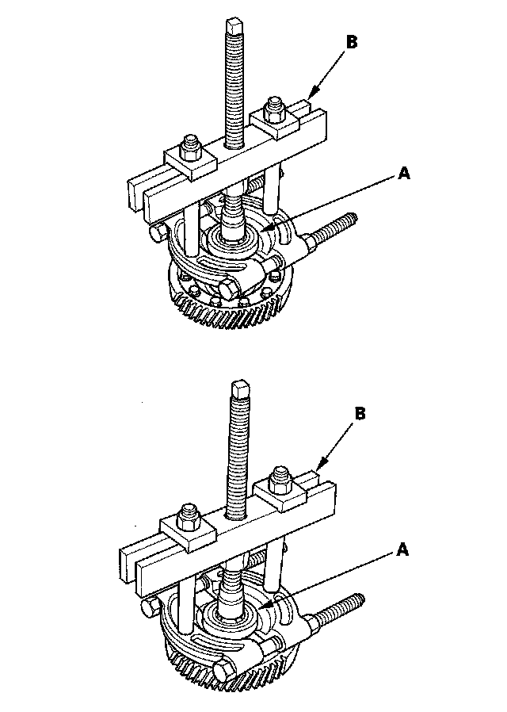
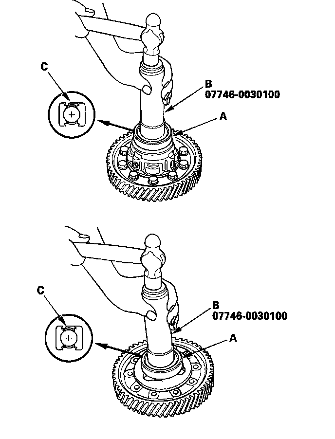

Carrier Bearing Replacement
Carrier Bearing ReplacementSpecial Tool Required
^ Driver, 40 mm I.D. 07746-0030100
1. Check the carrier bearings for wear and rough rotation. If they rotate smoothly and their rollers show no signs of wear, the bearings are OK.
2. Remove the carrier bearings (A) with a commercially available bearing puller (B).

3. Install the new bearings (A) with the 40 mm I.D. driver (B) and a press. Press each bearing on until it bottoms. There should be no clearance between the bearings and the carrier.
NOTE: Place the seal (C) part of the bearing towards the outside of the differential, and install it.
